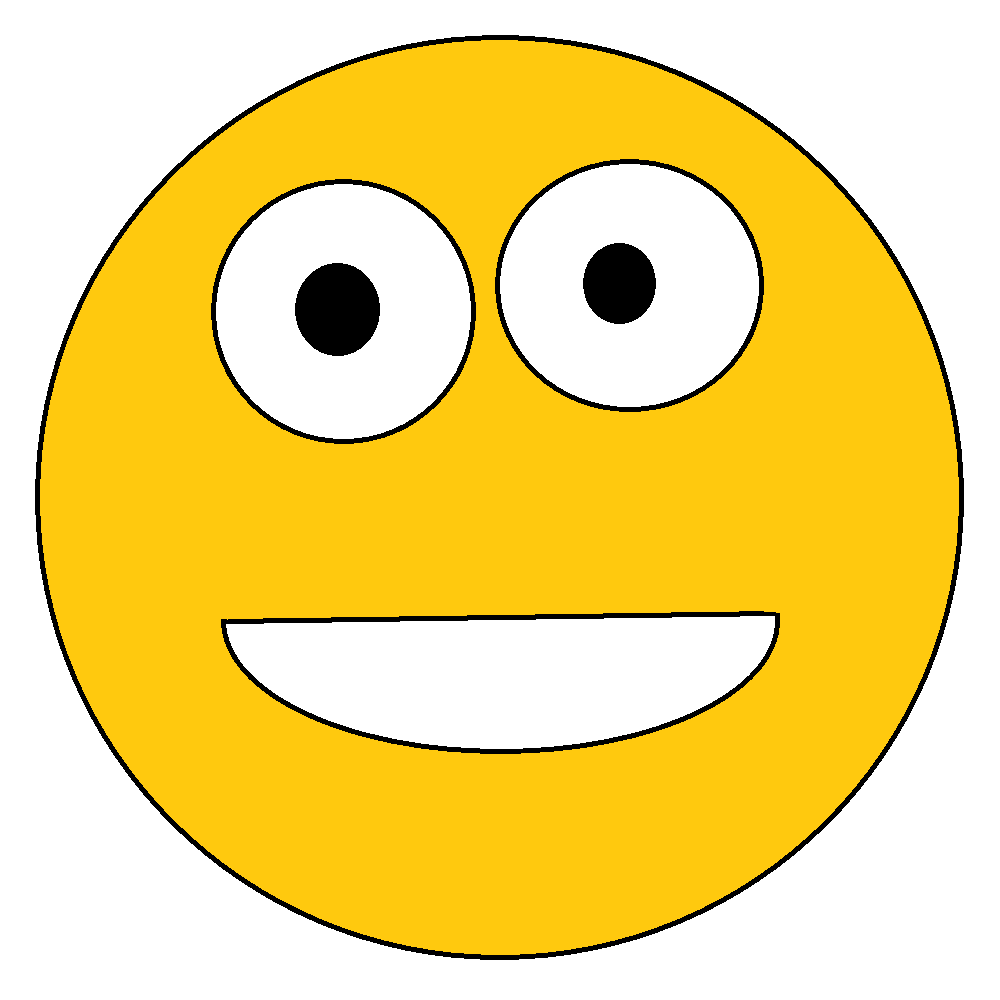
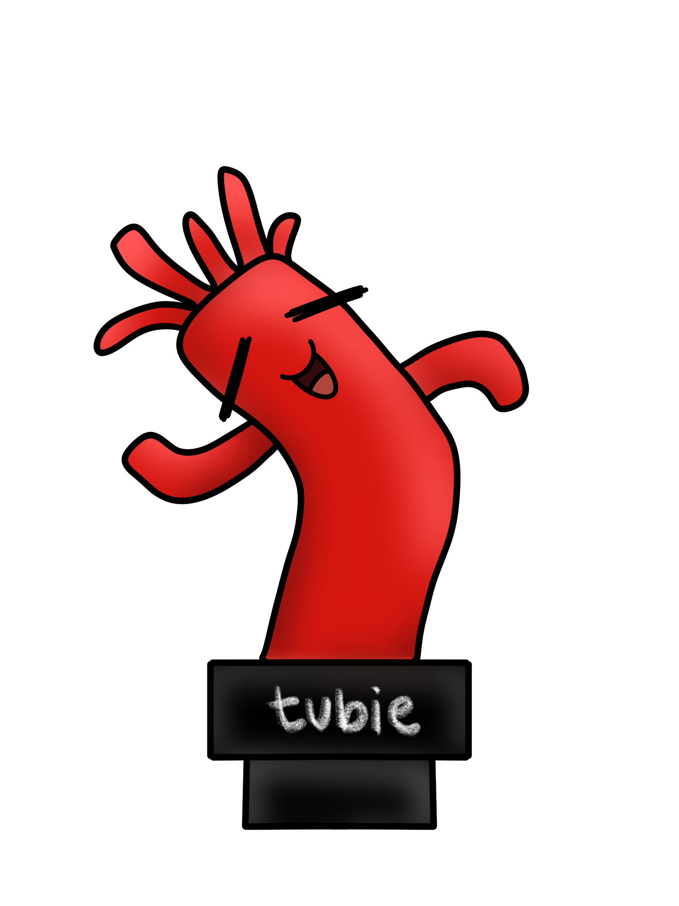
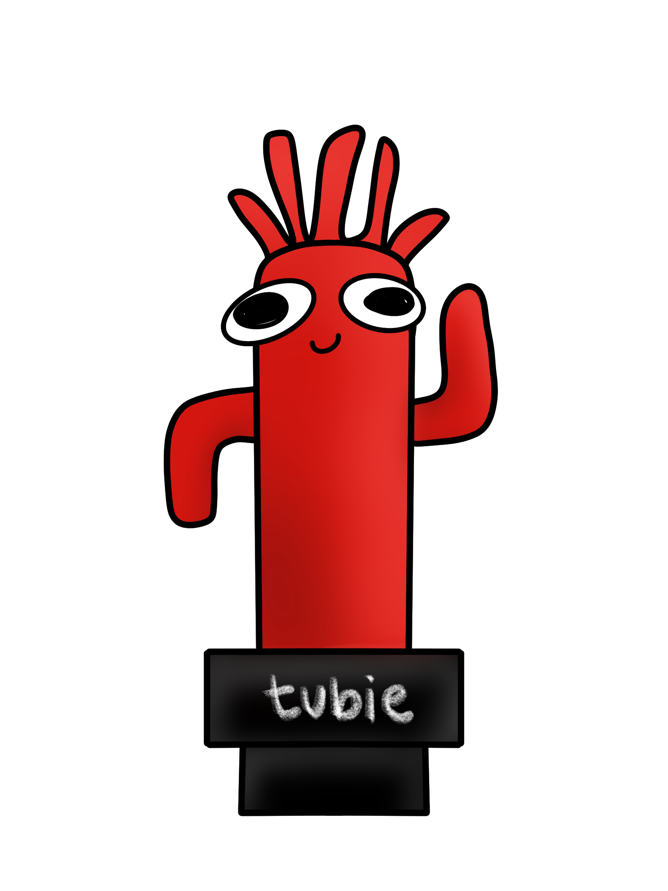
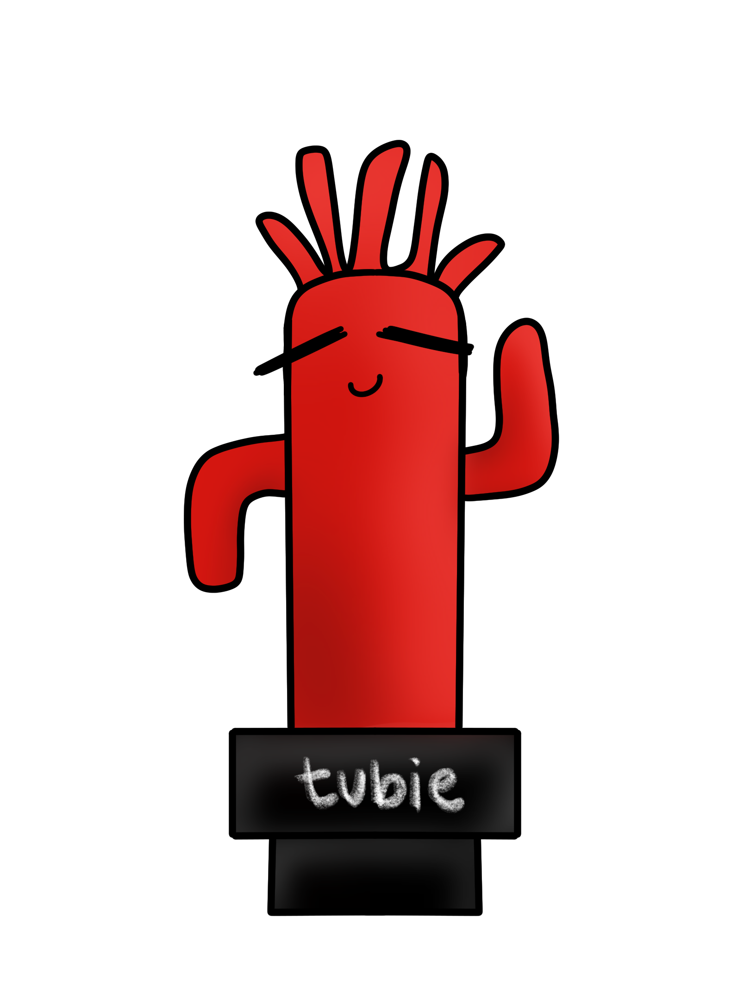

<script>
    const csslink=new URLSearchParams(window.location.search).get('css')
    const css=document.createElement('link')
    css.rel='stylesheet'
    css.href=csslink
    document.head.appendChild(css)

    let backoff=false
    let idle=false

    window.onclick=async function(){
        if(backoff){
            if(!idle){
                idle=true
            }
            return
        }
        for(const img of document.querySelectorAll('img')){
            img.classList.toggle('active')
        }
    }

    function backoffStart(event){
        if(event instanceof AnimationEvent && getComputedStyle(event.target,event.pseudoElement).animationIterationCount=='infinite'){
            return
        }
        backoff=true
    }

    function backoffEnd(){
        backoff=false
        if(idle){
            for(const img of document.querySelectorAll('img')){
                img.classList.remove('active')
            }
        }
    }

    window.ontransitionstart=backoffStart
    window.ontransitionend=backoffEnd
    window.ontransitioncancel=backoffEnd
    window.onanimationstart=backoffStart
    window.onanimationend=backoffEnd
    window.ontransitioncancel=backoffEnd

    import('./blink.js')
</script>